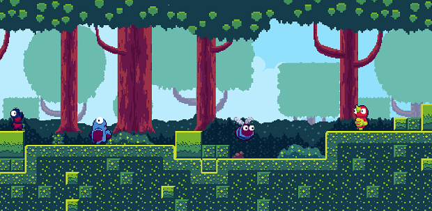
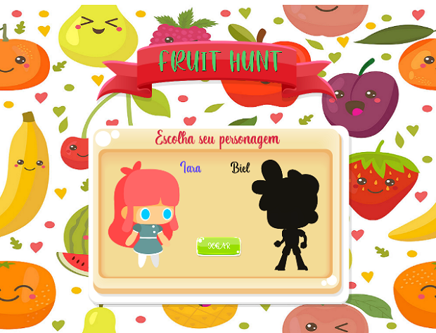

Projeto de estudo em Phaser 3.
SCAN RESULT
Result Here

Projeto de estudo em Phaser 3.
Projeto de estudo em Phaser 3.
Kenny em seu eterno pesadelo, ajude-o a sair desse loop.

Jogo da memória baseada em grandes figuras negras, caribenhas e indigenas.

Fruit Hunt é um jogo de corrida infinita, pensado para estimular a boa alimentação e o aprendizado da lingua inglesa.
